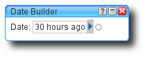

Estimated reading time: 6 minutes
Mangling planets¶
Over lunch today a few people were talking about planet feeds, and the topics mostly revolved around why they don’t read them. I was quite surprised how many people miss out on the often marvellous insights in to the projects we use everyday, but I think I understand the reasoning.
Reading the output of some planets can soak up an awful lot of time, and the posts aren’t always about topics that interest you. I don’t treat this is a bug, skimming the musings of talented people often leads you to think about problems you’re facing differently and that is a good thing.
I’m wondering if some of the problems people face are because their workflows for processing all that content aren’t good enough, so I’m going to mention one of the techniques I use. Maybe it will help you, or maybe you’ll suggest a better idea to me.
Note
Now that Yahoo have shut down Pipes, I’m even more interested in alternatives options. If you know of any interesting tools to do similar tasks get in touch.
The feeds¶
I subscribe to Planet Debian, Planet Freedesktop.org, Planet gnome, Planet Gentoo, Planet Haskell and Planet Python. These planets syndicate a large number of feeds, see the table below for a breakdown of yesterday.
Planet |
Entries |
|---|---|
Debian |
8 |
Freedesktop.org |
1 |
gnome |
8 |
Gentoo |
3 |
Haskell |
3 |
Python |
3 |
Total |
26 |
26 new entries for yesterday and that is excluding other feeds I subscribe to; news, friends blogs, feeds for work projects, service updates and possibly others I’m forgetting as I write this. Reading all this would drain a huge amount of time, much more than a train commute or whatever other dead time there is to fill. My answer is quite simple, I don’t read it all.
We’ll examine just the planets, but what I’m going to say mostly applies to the other content too.
The task¶
Not all the entries are new, some are duplicates(this is especially between Debian and gnome planets). Some are uninteresting to me, talk of technologies I won’t(not don’t) use. Some are the minutiae of their author’s day, which I’m sure are interesting if you know the authors but if I did know them they’d be in the friends feed category already.
The question quickly becomes how to filter them, and the answer is: use Yahoo! Pipes.
Yahoo! Pipes is a clever little web-based tool for mangling data hosted on the internet, be it single pages or feeds or even CSV data files. The interface is a friendly Javascript drag-and-drop affair, just select the tools you wish to use and literally connect the dots.
Fetching feeds¶

Fetching the planet feeds is simple, just select the Fetch feed item in the
Sources menu to create a new object, and enter the URLs of the feeds you
wish to play with. In this instance it is a heap of planet feeds, but you can
put anything you want in there. I should add that it handles the various RSS
formats better than you may expect for such a poorly specified format.
Note that at this point you could just connect the feeds object to the Pipe
output and you’ll have a single, yet humongous, feed that contains the
content from the all individual feeds. The way to think of Fetch feed is
as a cat(1) for feeds.
Uniquify¶
To remove duplicates we add a Unique object from the Operators menu to
the diagram, and choose the element we wish to use for testing equality. We’re
choosing to calculate an entry’s uniqueness by checking the value of the
link element, while noting that this makes the hopefully reasonable
assumption that people are smart enough not to use the same link for multiple
entries.

With these two simple objects we already have a combined feed of all the planet
outputs with the duplicates removed. However, using it directly like this
would probably not be a good use of resources, as its update frequency would be
significantly higher than the individual feeds. We would also lose the
bandwidth savings of the Last-modified and etag headers for each feed,
which can be very useful for feeds that don’t update very often.
If we were to compare Unique to a command line tool it would be
uniq, with a variety of --check-chars and --skip-fields
options to define our filter.
Filter it¶

At this point we want to filter entries that are of no interest to us, for
whatever reasons we may have. If we add a Filter item from the
Operators menu we can filter in many, many ways. This is perhaps a good
time to note that each object has a very useful set of documentation and
normally at least one usage example available, just click the ? icon on an
object, or select it within the menu.
For starters, we may as well filter entries we have seen before. My feed
reader automatically fetches feeds once a day, so there is no point whatsoever
fetching entries that are older than a day. We can use the
item.y:published.utime selector to filter based on publication date. To
supply the date with which to filter we use the Date Builder item from the
Date menu, it accepts string date expressions so we can use 30 hours
ago as a value. We use 30 hours instead of 24 hours to account for
occasional problems with the cron job, such as errors caused by network
outages.
You need to be very careful when specifying dates or times in this way as the parsing is very lax. It uses US-style date formats and defaults to 12-hour clock for times, so it is unlikely to do what you expect. Be sure to check the debug window to see what value it has parsed from your input. If it sounds like I’ve been caught by this before, then you’re hearing the echoes of my pain clearly.
Another filtering example, that I mentioned at the start, is to filter for
authors who write entries we aren’t interested in. In this instance the filter
we want to use is the item.link selector with a unique string from their
entry URLs. The hostname is often perfect for this, but any unique
identifying string is usable; their user name on a shared server for example
project/~nobody/
Taking the other example from above we will filter entries with references to
technologies that are of no interest to us. We can access the entry’s content
with the item.content.content selector and then apply a string match or
regular expression that marks an entry as uninteresting to us. You should note
that Yahoo! Pipes uses extended regular expression syntax, so for example
\s+ matches multiple whitespace characters(this seems to trip a lot of
people up who are used to grep’s BRE
behaviour).
Note
I’ve purposely chosen not to show the filtered people or technologies in the screenshots, as it isn’t really fair. Some of the people I filter do some great work on their respective projects, but their blogs include information I’m not particularly interested in seeing. I don’t believe it has harmed the examples too much, but if something isn’t clear just ask!
Output¶
I’m a neat freak, so I always re-sort the output before finally delivering it. I sort it based on publication date, so that it is easier to scan the output by hand if the need arises.

If you weren’t to sort the final output then it would be in the order it was included in to the stream, grouped first by feed URL and in whatever order the original feed had. Again very much following the format you’d expect from a simple cat(1)-based pipe.
The methods outlined here also save us a very small amount of daily data transfer too, without the splicing and filtering today’s data would be 1.3MiB and after it is mangled it is less than 200KiB. Of course, these figures will vary considerably based on the activity in the feeds.
The other quite interesting thing to note is that Yahoo! Pipes allows you to output data in various formats. The JSON output, for example, makes it very easy to post-process the data locally using Ruby or Python. Some of the reasons you may wish to do that are best left for another day.
Sidenotes¶
Every time I play with Yahoo! Pipes I wonder why people(including myself) still write manual scraping tools, it is just that good. Pull resources, filter resources, mangle them, output as RSS or JSON. However, despite what the documentation says Atom still appears to be unsupported, which is a great shame as nobody should really be recommending RSS 2.0 at this point.
While Yahoo! Pipes is a lot of fun for just playing with feeds, it is also very powerful for processing many other forms of data. The sources module contains lots of methods for pulling data from the internet, so play around with it.
One special supported source is YQL, a SQL-alike language created by Yahoo. It is often described as “select * from internet”, and that is a very accurate description. It really does make scraping and mangling data as simple as forming some structured queries. If you do any scraping or processing of external data be sure to have a quick read of the the two-minute tutorial.
Authenticate this page by pasting this signature into Keybase.
Have a suggestion or see a typo? Edit this page